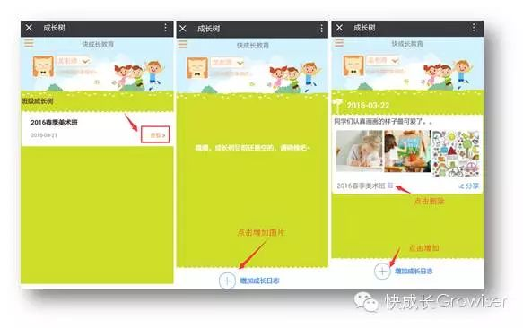
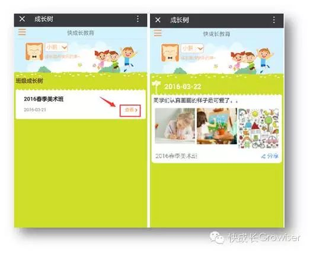
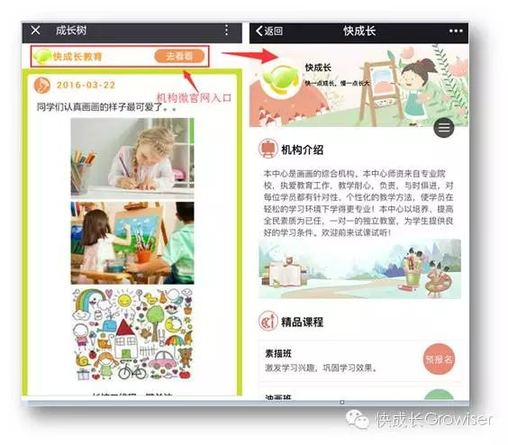

很多家长由于工作繁忙，没有很多时间陪伴在孩子身边，错过了孩子成长过程中很多的美好瞬间……
很多老师苦于每天要花很多时间向各位家长反馈孩子们的在校情况，工作与生活无法划分界限、切换自如……
不过现在好了！有了快成长教育的“成长树”，老师一键上传照片记录孩子在机构的成长点滴。家长打开手机就能看到孩子在学校的点点滴滴啦，从此省掉冗杂的无效沟通！
既可以呈现孩子成长的精彩瞬间、又能传达机构的教育成果。成长树就是这么一个温暖的家校互动工具！
记录成长树的理由，这几个足够啦~~
让家长看得到孩子在学校的成长，增强家校互动，建立融洽关系
让家长看得到孩子在学校的成长，增强家校互动，建立融洽关系
让家长看得到孩子在学校的成长，增强家校互动，建立融洽关系
让家长看得到孩子在学校的成长，增强家校互动，建立融洽关系
1、老师如何“浇灌”成长树
（1）点击“成长树”按钮 → 进入班级列表，找到要编辑成长树的对应班级
（2）点击“查看”按钮，进入成长树时光轴界面 → 点击底部的“增加成长日志”按钮，可上传图片或输入文字，记录孩子的成长瞬间（点击图片可放大查看）
2、学生家长如何查看成长树
（1）点击“成长树”菜单 → 进入班级列表，找到要查看成长树的班级
（2）点击“查看”按钮，进入成长树时光轴界面，即可查看孩子的成长树
成长树有更新推送功能哦！若老师有更新内容，则系统每天晚上9点会统一发一条消息提醒家长。这样既达到通知效果，同时又减少了对家长的干扰。
3、赶紧转发分享，传播成长快乐
转发分享成长树，便是对机构教育点滴的曝光，更多分享，更多曝光！
90%的人都在使用微信，而几乎每个人都会发微信朋友圈，有的人一天发一次，有的人一天发好几次。在家长人群的朋友圈中，“晒娃”便是最常见的，而成长树就是孩子专属的朋友圈。
轻轻松松一键转发分享，既能够满足晒娃家长的浏览欲望和转发欲望，同时也是机构宣传的有效手段之一，一箭双雕，何乐而不为？
如下图所示，校长老师、学生和家长点击“分享”按钮一键分享到朋友圈或发送给朋友。
成长树被转发后，默认会带微官网入口哦！点击“去看看”按钮即可跳转到机构的微官网页面，能够让更多的人通过微官网对学校有更多了解！
更锦上添花的是，微官网的课程介绍都默认带有预报名入口哦，学生、家长可以点击进入预报名表格界面，对感兴趣的课程进行预报名。让招生更精准、更高效！（详细操作方法请参考我们推送过的《预报名：一个让生源主动送上门的神奇表格！》）
有些老师担心这个功能会增加工作量，其实记录“成长树”并不会占用老师太多时间。
老师们并不需要每天都在“成长树”上传图文，可根据实际情况，什么时候方便就什么时候记录。
目前的“成长树”是以班级为维度的 ，每个班级一棵成长树，关于”成长树“的记录没有约定俗成的数量和频率，记录和转发“成长树”就像发微信朋友圈一样简单，完全不会占用您太多的时间哦。
“成长树”记录的不仅仅
是孩子们的成长轨迹
更是老师们教学风格
教育成果的沉淀、传承和展现